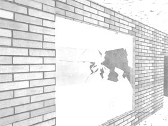

Splitter is a project that addresses a common but yet unsolved problem and presents a possible solution that makes existing implementations in advanced 3D games look bad. We have developed a unique glass-breaking algorithm that is designed to run sufficiently fast to be used in demanding applications such as high-paced 3D action games.
Even today, when realistic physics and sophisticated 3D graphics are important parts of many popular computer games, there is no well-known serious attempt to simulate the breaking of glass in real-time. Instead, developers settle with static animations or predefined crack patterns which may appear acceptable in some applications but nevertheless are unrealistic and a sometimes disturbing element in an otherwise appealing game experience.
We wanted to develop a simple, fast and reasonably correct physical simulation of crack pattern generation and loose-piece detection in breaking glass. The aim was for it to run in real-time on a standard PC.
We were told that the identification of loose pieces probably couldn't be performed in real-time. Nevertheless, the resulting application solves this problem in almost no time at all.
Overall our project has recieved very positive reactions from various people at the university. We are very pleased with the result and believe that the method used in our prototype could dramatically improve the visual impact of games and other 3D applications.
For a quick glance at the result, click on the image below to see a larger version.
To provide all the information about the project, we have included links to the project abstract and report as well as the compiled application (Windows platform only). The source code is available as an appendix in the report. The manual for the application is also downloadable.
» Project Abstract (PDF)
» Project Report (PDF)
» Application (ZIP archive)
» User Manual (PDF)
If you have any questions, feel free to contact us. The team behind the Splitter project is:
» Jesper Carlson
» Daniel Enetoft
» Anders Fjeldstad
» Kristofer Gärdeborg
{kind=link}